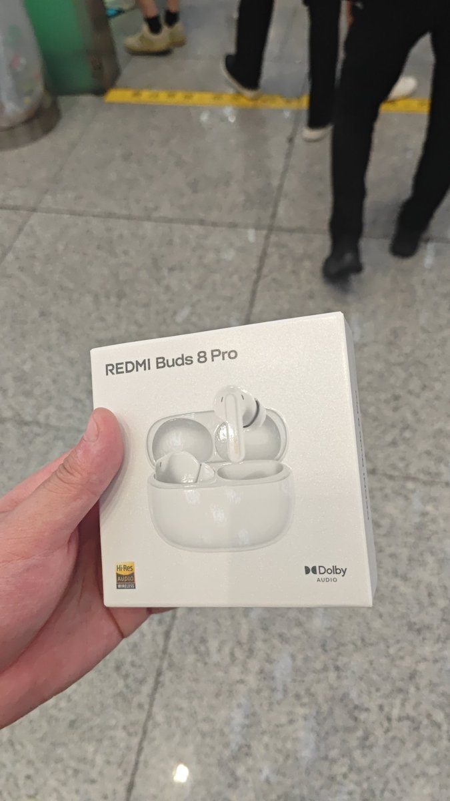
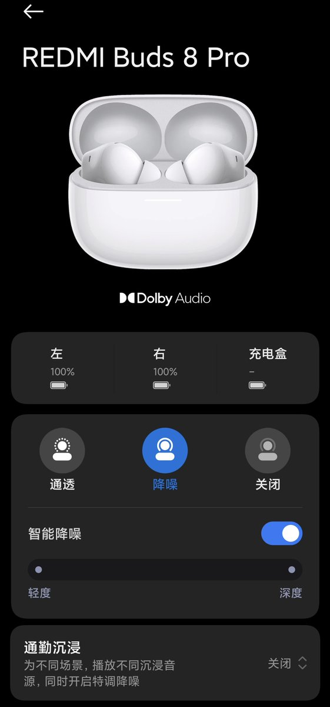

奶昔🥤
@realNyarime
说个很草的事，从香港返回深圳的路上不小心丢失了华为FreeBuds Pro3，直到昨晚回酒店才发现
今天去宝安机场赶飞机的路上，正巧机场安检前有米家，就花了399买了个入门款的小米耳机听个响
当然这个价格，我已经不求有LDAC了，有个LHDC就很感恩了🥺


清凤
@qqqqqf_
后天要坐高铁六个小时
我目前只有一个很难用的猫咖耳机
我在想是花400买一个OPPO free4还是花1400买一个AirpodsPro3